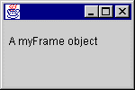

QUESTION 8:

Why is it incorrect for main()to do this:
frame.paint();
Sure. The JFrame class is a class like any other
and can be extended.
JFrame Class
The usual way of writing a GUI is to define your own
class by extending the JFrame class.
Here is a program that does that.
It also includes several other new features.
import java.awt.*;
import javax.swing.*;
class myFrame extends JFrame
{
// paint() is called automatically by the system
// after it has displayed most of the frame, but
// needs to finish by displaying your customizations.
public void paint ( Graphics g )
{
// draw a String at location x=10 y=50
g.drawString("A myFrame object", 10, 50 );
}
}
public class TestFrame2
{
public static void main ( String[] args )
{
myFrame frame = new myFrame(); // construct a myFrame object
frame.setSize( 150, 100 ); // set it to 150 wide by 100 high
frame.setVisible( true ); // ask it to become visible
}
}

The Java system displays a frame
on the screen when needed
(you saw them at work in the previous program).
The class myFrame extends the class JFrame.
The paint() method of a JFrame object
is called by the Java system (not by you)
to finish the display.
Most of the graphic is done; paint() just finishes it.
If you override the paint() method,
you can display your own components in the frame.
The picture shows the display of the myFrame object.
As with the previous program,
hit control-c in the
DOS window to stop the program.
(Remember to first click inside the DOS window so the
control-c kills the correct program).
Why is it incorrect for main()to do this:
frame.paint();